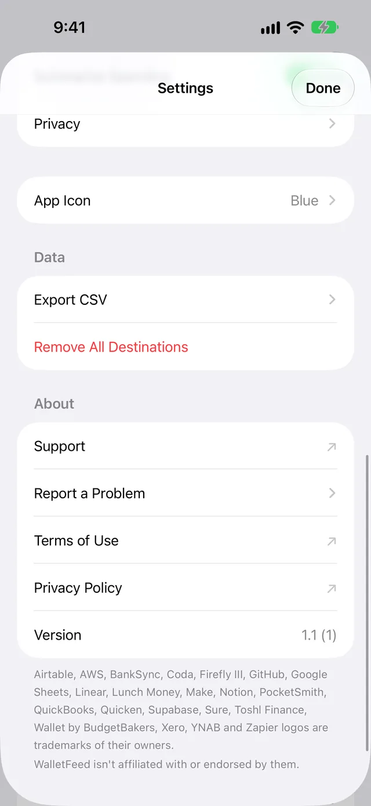
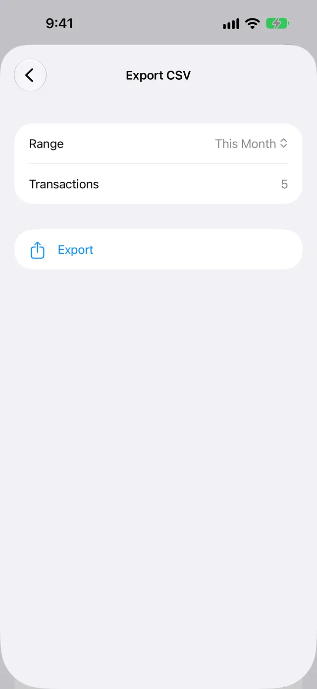

Make an export file of your Savings transactions
Wallet makes an export file of the transactions of your Apple Card Savings account from each monthly statement. Wallet also gives you each statement as a PDF file. In WalletFeed, Export CSV makes a CSV file of your Savings transactions from a period that you select, for example This Month.
Download WalletFeed on the App Store
WalletFeed Pro is not necessary for Export CSV. With WalletFeed Pro, WalletFeed also updates a CSV file when your Savings transactions change.
Before you start
You must have:
- Your Savings account in Wallet on your iPhone
- For card.apple.com/savings, a computer with a web browser
- For WalletFeed, an iPhone with iOS 26 or a newer version
- WalletFeed, with access to your Savings account
- For a file that WalletFeed updates, WalletFeed Pro.
WalletFeed is available only in the US.
Download the transactions of a statement in Wallet
A statement shows the transactions of your Savings account for the statement period. Apple tells you that the monthly statement is usually available on day 1 of each month.
- On your iPhone, open Wallet.
- Tap your Apple Card.
- Tap Savings account.
- Tap the More button.
- Tap Documents.
- Tap Statements.
- Tap the month of the statement.
- Tap Export Transactions.
- Select a file format.
Wallet shows the file formats that you can select.
Download a PDF statement in Wallet
-
In Wallet, open a statement (refer to steps 1 to 7 in Download the transactions of a statement in Wallet).
-
Tap View PDF Statement.
-
Tap the Share button.
You can then save, print or send the statement.
Download a statement on a Mac or a PC
- On your computer, open card.apple.com/savings.
- Get access to your Savings account with your Apple Account.
- Click Documents.
- Click Statements.
- Click the download button for the month of the statement.
Apple gives these steps in View and update your Savings account information in Apple Wallet. For card.apple.com/savings, this page gives no Export Transactions function.
Make a CSV file with Export CSV
Export CSV in WalletFeed makes one CSV file with your transactions from a period that you select. You can use it without WalletFeed Pro. The file includes pending transactions. The file does not change after WalletFeed makes it.
-
On your iPhone, open WalletFeed.
-
Tap Settings (the gear button) at the top of the screen.
-
In the Data section, tap Export CSV.

-
Tap Range.
-
Select a period: This Month, Last Month, Last 90 Days, This Year, Last Year or All.

Transactions shows the number of transactions in the period.
-
Tap Export.
-
Tap Save to Files.
-
Select a folder.
-
Tap Save.
At step 7, you can also select AirDrop, Mail or a different app in the menu.
This Month has the transactions from the first day of this month. All has all the transactions that WalletFeed can read in Wallet.
WalletFeed makes the file on your iPhone and does not keep it. WalletFeed has no account, and no WalletFeed server keeps your transactions.
Find your Savings transactions in the file
The file has the transactions from each Wallet account that WalletFeed can read. The Account column shows the name of the account of each transaction, for example Savings. Thus, in a spreadsheet, the rows with Savings in the Account column are your Savings transactions.
The name of the file starts with Apple Card and includes the period, for example Apple Card Last Month.csv. The name is the same when the file has Savings transactions.
You can open the file in Numbers or Excel.
Columns in the CSV file
The first row has the names of the columns. Each row after it has one transaction. The newest transaction is first.
| Column | Data |
|---|---|
| Date | The date of the transaction in the time zone of your iPhone, for example 2026-10-28. |
| Posted Date | The date when the transaction posted. This cell is empty until the transaction posts. |
| Merchant | The name of the merchant. If Wallet has no merchant name, this cell has the text from Description. |
| Description | The text of the transaction in Wallet. |
| Original Description | The description of the transaction with no changes. |
| Amount | The value, for example -23.40. The value of a debit is less than zero. The value of a credit is more than zero. |
| Currency | The currency code, for example USD. |
| Direction | debit or credit. |
| Status | The status in Wallet, for example pending or booked. |
| Type | The type of transaction in Wallet, for example transfer. |
| Category | The WalletFeed category, for example Cash & Transfers. |
| MCC | The merchant category code. If Wallet has no code, this cell is empty. |
| Account | The name of the Wallet account, for example Savings. |
| Foreign Amount | For a transaction in a different currency, the value in this currency. |
| Foreign Currency | The code of the currency in Foreign Amount. |
| Exchange Rate | For a transaction in a different currency, the exchange rate from Wallet. |
| WalletFeed ID | The ID of the transaction. A transaction has the same ID in each file from Export CSV. |
Make a CSV file with Export CSV gives more data about each column.
Update a file with your Savings transactions
With WalletFeed Pro, WalletFeed writes your transactions to a CSV file in a folder that you select. When your transactions change, WalletFeed updates the file. Thus, it is not necessary to make a new file.
WalletFeed Pro is a subscription with a 1-week free trial, or a one-time Lifetime purchase.
-
On your iPhone, open WalletFeed.
-
Tap Destinations.
-
Tap + at the top of the screen.

-
In the search field, type
CSV. -
Tap CSV File.
If you do not have WalletFeed Pro, the WalletFeed Pro screen opens. After you get WalletFeed Pro on that screen, the Files screen opens.

-
Tap Folder.
-
Select a folder, for example in iCloud Drive.
Folder then shows the name of the folder.
-
Tap Add.
-
When WalletFeed shows Save Transactions to Files?, tap Save.
The message tells you the data that the folder will receive. It also gives the accounts and the period of the transactions. If you tap Cancel, WalletFeed removes the new destination.
WalletFeed then writes your transactions to WalletFeed Transactions.csv in the folder. The file has the same columns as the file from Export CSV. Save Apple Card transactions to a CSV file gives all the steps for this file.
Send only your Savings transactions to the file
A new destination receives the transactions of each Wallet account that WalletFeed reads. A filter selects the accounts for a destination.
-
In WalletFeed, tap Destinations.
-
Tap the destination.
-
Set the Filter switch to on.
-
Tap Accounts.
-
Tap your Savings account.
The Accounts screen shows a checkmark on the row of the account.
-
Tap the back button at the top of the screen.
After this, the file receives only your Savings transactions. The transactions that the file received before you set the filter stay in the file.
You can also set the filter before the file receives previous transactions. Filter the history of a new destination gives the steps.
Changes to the file
While WalletFeed is open, the file receives changes in seconds. When WalletFeed is not open, iOS starts WalletFeed approximately 1 hour or less after a change in Wallet. If Background Sync is on in Settings › Sync, WalletFeed then updates the file. If WalletFeed cannot open the folder at that time, the file changes when you open WalletFeed, when an automation starts, or while your iPhone charges.
Delete the destination
- In WalletFeed, tap Destinations.
- Tap the destination.
- Tap Delete.
- Tap Delete again.
After you delete the destination, the file and the transactions in it stay in the folder.
If there is a problem
If the file has no Savings transactions
WalletFeed cannot read your Savings account, or the period has no Savings transactions.
-
On your iPhone, open the Settings app.
-
Tap Privacy & Security › Wallet › WalletFeed.
-
Select your Savings account.
-
For the Savings account, select the start date.
From this date, WalletFeed can read the transactions of the account.
-
Open WalletFeed.
-
Make the file again with a different period in Range, for example All.
Wallet accounts gives all the steps.
If you cannot tap Export in WalletFeed
You cannot tap Export while WalletFeed reads your transactions, or when the period has no transactions.
- Make sure that Transactions shows a number.
- If the number is 0, select a different period in Range.
 Scan with your iPhone
Scan with your iPhone
Related
Updated November 26, 2026